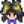

Ginger
Jump to navigation
Jump to search
| Ginger | |||||||||||||||
| This sharp, spicy root is said to increase vitality. | |||||||||||||||
| Information | |||||||||||||||
| Source |
|
||||||||||||||
| Season | |||||||||||||||
| XP | 7 Foraging XP | ||||||||||||||
| Energy / Health |
|
||||||||||||||
| Sell Price | |||||||||||||||
|
|||||||||||||||
Ginger is a root found growing wild on Ginger Island. It must be harvested with a hoe. It can also be dropped by Tiger Slimes and Stick Bugs.
Gifting
| Villager Reactions
| |
|---|---|
| Like | |
| Neutral | |
| Dislike | |
Recipes
Cooking
| Image | Name | Description | Ingredients | Energy / Health | Buff(s) | Buff Duration | Recipe Source(s) | Sell Price |
|---|---|---|---|---|---|---|---|---|
| Ginger Ale | A zesty soda known for its soothing effect on the stomach. | Dwarf Shop in Volcano Dungeon for |
Crafting
| Image | Name | Description | Ingredients | Recipe Source(s) | Sell Price |
|---|---|---|---|---|---|
| Warp Totem: Island | Warp directly to Ginger Island. Consumed on use. | Volcano Dwarf for |
Tailoring
It is used in the spool of the Sewing Machine to create the  Forager's Hat. It can be used in dyeing, serving as a yellow dye at the dye pots, located in Emily's and Haley's house, 2 Willow Lane.
Forager's Hat. It can be used in dyeing, serving as a yellow dye at the dye pots, located in Emily's and Haley's house, 2 Willow Lane.
Quests
- Three Ginger may be requested by Lionfish in a Fish Pond quest to increase the capacity of the pond from 3 to 5.
- Caroline may request 100 Ginger in the "Island Ingredients" Special Order. The reward is gold equivalent to 50% of base crop price and the Solar Panel recipe.
Notes
- Ginger and ginger ale are common remedies for nausea. Though it is not specified in the objects descriptions, eating Ginger or drinking Ginger Ale cures the Nauseated debuff. This is hinted at by

Birdie, the pirate's widow who lives on Ginger Island.
History
- 1.5: Introduced.
- 1.6: Can now be made into Juice, and is no longer the only "Forage" item that can be pickled.
- 1.6.12: Harvesting Ginger now grants 7 Foraging XP.
| Foraging | |
|---|---|
| Basic | Sap |
| Spring | Common Mushroom • Daffodil • Dandelion • Leek • Morel • Salmonberry • Spring Onion • Wild Horseradish |
| Summer | Fiddlehead Fern • Grape • Red Mushroom • Spice Berry • Sweet Pea |
| Fall | Blackberry • Chanterelle • Common Mushroom • Hazelnut • Wild Plum |
| Winter | Crocus • Crystal Fruit • Holly • Snow Yam • Winter Root |
| The Beach | Clam • Cockle • Coral • Mussel • Nautilus Shell • Oyster • Rainbow Shell • Sea Urchin • Seaweed |
| The Mines | Cave Carrot • Purple Mushroom • Red Mushroom |
| The Desert | Cactus Fruit • Coconut |
| Skull Cavern | Dinosaur Egg • Fiddlehead Fern |
| Ginger Island | Ginger • Magma Cap |